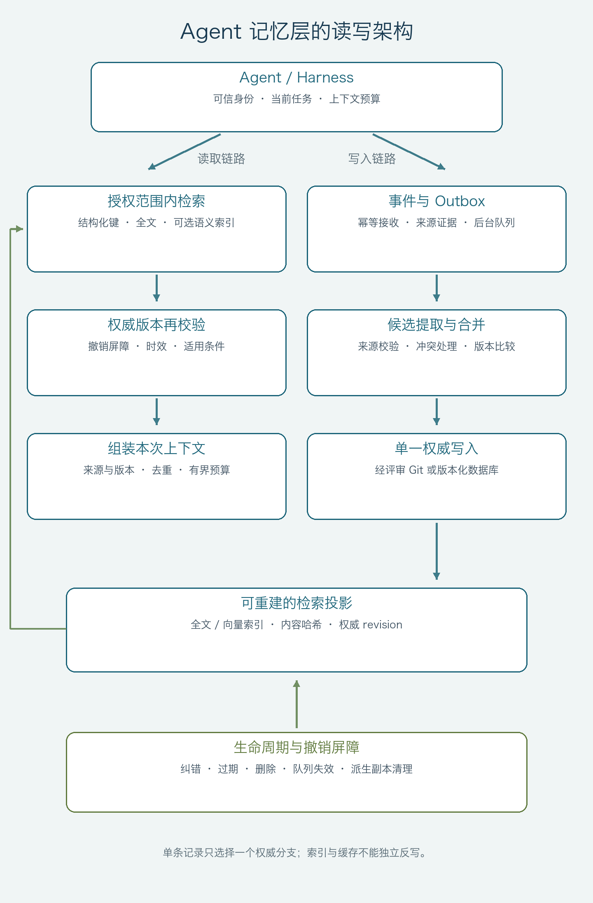

第二章 目标、边界与总体架构
状态：设计提案，尚未实现或压测。资料读取于 2026-10-19，方案整理于 2026-10-20。适用读者：个人编程 Agent、团队知识助理与企业 Agent 平台的开发者。
以下数据模型、接口、策略、参数和验收指标是本方案建议，不是 AWS、LangChain 或 Mem0 的既有产品合同。来源编号对应资料阅读与证据对照。
1. 目标与范围
系统应使 Agent 在新会话中复用适用的偏好、事实和经验，同时避免把旧信息、模型猜测或他人数据当作当前事实。核心交付不是“存入向量库”，而是一套可纠正、可追溯、可撤销的读写协议。
本方案解决五类问题：
- 同一用户跨会话重复说明偏好。
- 同一项目反复重新调查已验证的问题。
- 新旧事实、任务特例与全局偏好互相覆盖。
- 多 Agent 同时写入造成重复、丢失更新和循环强化。
- 已删除的信息经摘要、索引或后台任务重新出现。
第一阶段不做模型训练、自动修改全局系统提示词、默认部署图数据库，也不把历史授权转换为当前行动权限。本文描述独立的记忆层及其在 Agent/Harness 中的接入位置，不依赖某个代理服务的推理转发实现。
2. 已接受的设计决策
| 决策 | 原因与代价 |
|---|---|
| 原始事件、任务状态、长期记忆、能力资产分别建模 | 各自需要不同的恢复、检索、版本和删除语义；不能用一张聊天表包办 [S5] |
| 每类记录只有一个权威来源，其他存储为可重建派生物 | 避免数据库、Markdown、向量索引各自保存不同“真相” |
| 默认后台提取，少量显式偏好允许在线提交 | 减少推理主路径负担；代价是自动提取存在可见性延迟 [S1][S6] |
| 提取器只提交候选，不直接决定权限和权威状态 | LLM 判断可能出错；可信身份与写入策略由服务端执行 |
| 使用结构化记录加全文检索，语义检索按评估需求增加 | 保持最小实现；向量与图均不是记忆成立的前提 |
| 规则和 Skill 经评审、测试后才能提升 | 保留自主积累经验的能力，同时控制行为漂移 [S5] |
| 检索失败可不使用历史；身份或过滤失败则不返回记忆 | 避免记忆层故障阻断普通任务，或以可用性为由扩大数据范围 |
2.1 权威内容与派生存储
| 数据类别 | 权威内容 | 派生物 |
|---|---|---|
| 原始证据 | 受保留策略管理的事件库/对象存储 | 摘要、检索文本、审计统计 |
| 当前任务状态 | 有事务或检查点语义的状态库 | UI 进度、临时上下文 |
| 个人工程知识与团队规范 | 经评审的 Git Markdown/YAML | SQLite/PostgreSQL 查询视图、FTS/向量索引、运行时上下文 |
| 私有用户偏好与产品事实 | 有版本的数据库记录 | 搜索索引、缓存、画像视图 |
| 候选经验 | 有来源和状态的候选区 | 评审草稿；未接受前不成为正式知识 |
这是按记录类别划分所有权，不是让同一条事实在 Git 和数据库中双向独立编辑。每条记录的 authority 决定修订入口；派生库不能绕过入口反写权威内容。
对个人/工程知识，数据库可保存原始证据和候选，但被接受的复用知识以 Git 为准；索引携带对应 commit 和内容哈希。对企业产品中的私有偏好，则由数据库负责权威写入，避免把个人信息推入 Git 历史。两条部署分支使用相同的检索与生命周期合同。
3. 逻辑架构与边界

读取链路：可信身份与任务 → 授权范围内检索 → 权威版本及撤销校验 → 有界上下文。写入链路：事件与 Outbox → 后台候选 → 合并及版本校验 → 单一权威写入 → 可重建索引。删除与撤销屏障同时约束读取和写入。
W 根据记录所有权路由到 Git 或数据库，单条记录只进入其中一个权威分支。原始事件与任务检查点不经过长期记忆提取才能可用。
在个人工具中，这些模块可以是一个进程中的普通函数和后台 worker，不必拆成微服务。团队系统才按吞吐、隔离和运维需求拆分。
3.1 组件合同
| 组件 | 输入 | 输出与责任 |
|---|---|---|
| 事件接收器 | 可信会话上下文、允许保留的对话/工具事件 | 幂等事件、来源标识、保留期限、事务性 Outbox |
| 候选提取器 | 有界事件片段及必要上下文 | 结构化候选、证据引用、适用条件；可以返回空集 |
| 策略校验器 | 候选、身份、内容类型 | 接受/拒绝/待审；校验敏感信息、来源、范围与模式 |
| 合并器 | 候选及同一事实键的现有版本 | 新增、替代、补充证据、无变化或冲突待定 |
| 权威写入器 | 带期望版本的变更 | 事务提交或 Git 评审提案；拒绝越权和失效写入 |
| 检索与组装器 | 当前任务、可信作用域、预算 | 带来源与版本的记忆包，或明确的空结果 |
| 生命周期管理器 | 过期、纠错、撤销、删除指令 | 查询屏障、清理计划、完成证明与不可清理项报告 |